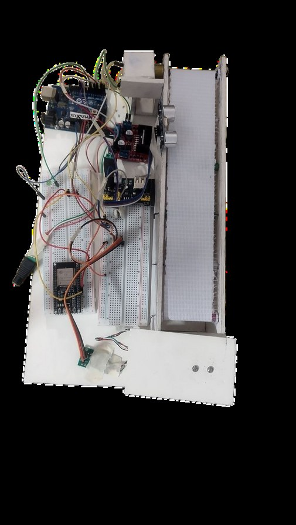
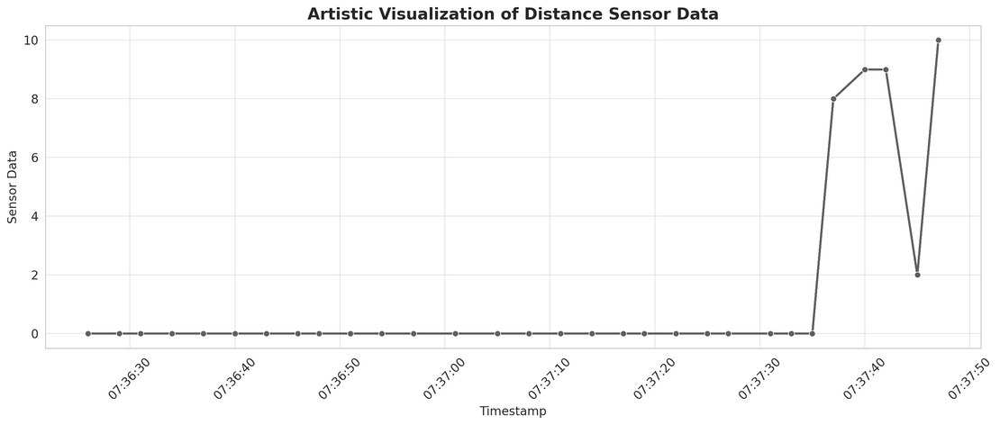
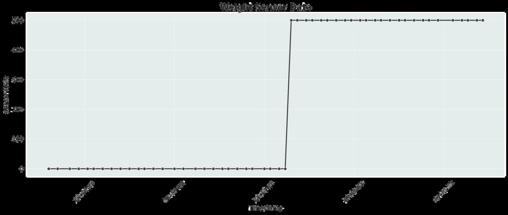

IoT-Based Smart Conveyor System for Integrated Quality, Inventory and Process Control
An automated, weight-triggered conveyor system with real-time inventory tracking and remote monitoring over IoT — built for course IPE 419 (Computer Integrated Manufacturing).

Overview
The system automates a weight-triggered conveyor operation and tracks inventory in real time. A 5kg load cell with an HX711 amplifier detects when an item's weight exceeds a preset threshold (e.g. 200 grams), which starts the conveyor motor — controlled by an L298N driver and a 6V 600RPM DC gear motor. A mechanical arm, driven by an SG-90 micro servo motor, places items onto the belt. An HC-SR04 ultrasonic sensor detects and counts each passing item, giving immediate visual feedback through a green LED. An ESP32 microcontroller provides IoT connectivity for remote monitoring and real-time logging of weight, item count, and system status.
Key features
- Weight-triggered start/stop logic using a load cell and HX711 amplifier.
- Automated item placement via an SG-90 servo-driven mechanical arm.
- Item counting and visual feedback via an HC-SR04 ultrasonic sensor and status LED.
- ESP32-based IoT connectivity for remote monitoring and real-time data logging.


Team
Md. Ahabab Ul Haq, Chowdhury Mouinur Rahman, Most. Noshin Ibnat, Md. Muqtadir Fuad, and Abdullah Al Mazid — supervised by Dr. Nafis Ahmad, Department of IPE, BUET. Course: IPE 419.
Links
- Video demonstration
- Project overview page
- Poster on ResearchGate — DOI 10.13140/RG.2.2.25476.23683